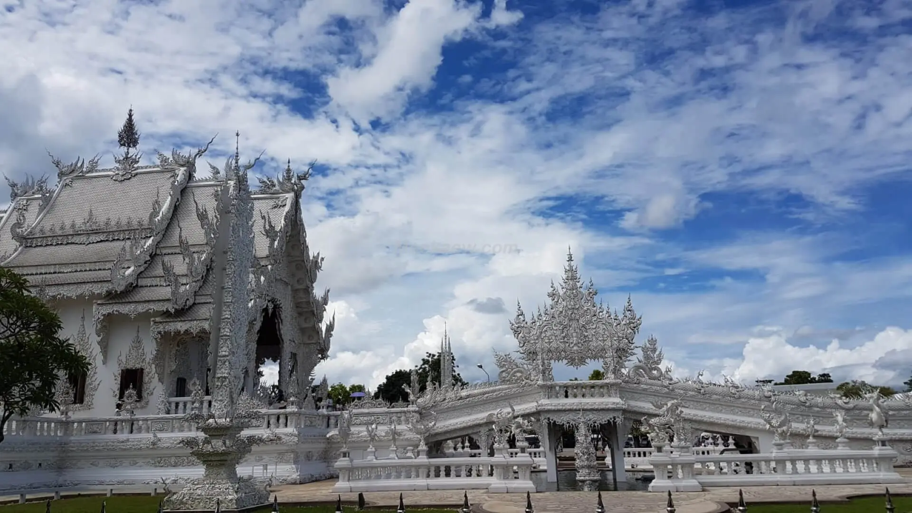
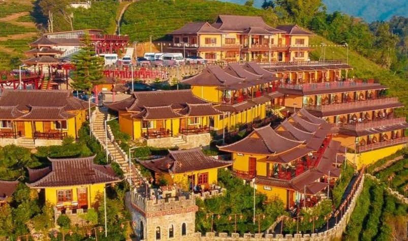

ภาคเหนือ



วัดพระธาตุดอยสุเทพราชวรวิหาร จังหวัดเชียงใหม่
วัดที่มีความสำคัญในแง่ประวัติศาสตร์ เป็นวัดคู่บ้านคู่เมืองที่ห้ามพลาดเมื่อมาถึงจังหวัดเชียงใหม่ ภายในเป็นที่ประดิษฐานขององค์เจดีย์ทรงมอญ ที่ใต้ฐานพระเจดีย์มีพระบรมสารีริกธาตุของสมเด็จพระสัมมาสัมพุทธเจ้าบรรจุอยู่ ซึ่งจัดได้ว่าเป็นปูชนียสถานที่แสดงออกถึงศิลปกรรมล้านนาไทยที่สำคัญคู่เมืองเชียงใหม่มาช้านาน อีกทั้งยังเป็นพระธาตุประจำ "ปีมะแม" ด้วย นอกจากนี้ยังสามารถขึ้นมาชมความงดงามขององค์เจดีย์ พร้อมกับชมทิวทัศน์โดยรอบของตัวเมืองเชียงใหม่ได้ โดยสามารถเดินขึ้นบันไดนาค 300 ขั้น เพื่อไปยังวัด หรือจะเลือกใช้บริการรถกระเช้าขึ้น-ลงดอยสุเทพ ก็ได้ตามสะดวก
ที่อยู่ของวัดพระธาตุดอยสุเทพราชวรวิหาร
ที่อยู่ : ถนนห้วยแก้ว ตำบลสุเทพ อำเภอเมืองเชียงใหม่ รหัสไปรษณีย์ 50200
เปิดทุกวัน 05:30-19:30
โทร : 053-295-002
พิกัด
ที่อยู่ : ถนนห้วยแก้ว ตำบลสุเทพ อำเภอเมืองเชียงใหม่ รหัสไปรษณีย์ 50200
เปิดทุกวัน 05:30-19:30
โทร : 053-295-002
พิกัด
นางสาวธิดาวัลย์ โอษฐ์งาม
นางสาวภัคริตรา ศรสุนทร
นายธนนนท์ พิกุลขาว
สาขาวิชาคอมพิวเตอร์ธุรกิจ วิทยาลัยเทคนิคสมุทรสงคราม